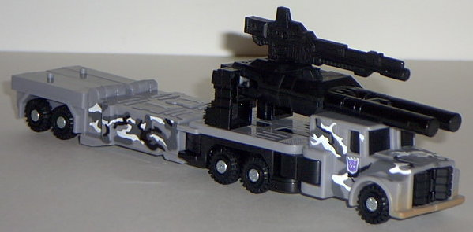 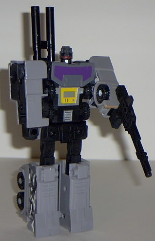
Size : Deluxe
Difficulty of Transformation : Easy
Individual Rating : 7.0
Giftset Contains
: Mega-Octane, Ro-Tor,
Movor, Rollbar, Armorhide, and extra Ruination parts and guns
Allegiances
: Decepticon
Price
: $25 (U.S.)
Color Scheme
: Gray, light gray,
black, white, and some purple, tan, yellow, silver, metallic light blue,
and red
Mold History
: Ruination's component
molds date all the way back to 1986, when the molds were released as the
Combaticons (which combined into Bruticus), part of the original Transformers
line.
Overall Rating
: 6.2
 Mega-Octane
Mega-Octane
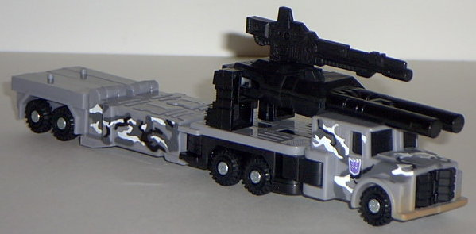
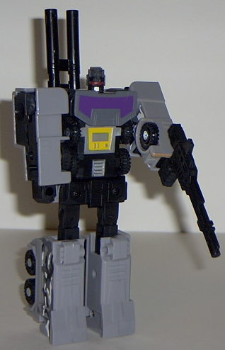
Size
: Deluxe
Difficulty of Transformation
: Easy
Individual Rating
: 7.0
(For a full review of the Mega-Octane mold, check out the original toy review here .)
The Urban Camo color
scheme works really well with Mega-Octane, and the paint detailing on the
sides is especially appreciated. A nice "dirt fade" on the front bumper
is also a cool touch. Oddly enough, however, there is no urban camo deco
on most of the top side of Mega-Octane, while there's tons on the sides.
Weird... In robot mode, his paint detailing is lacking from a front-on
view, but the purple and yellow do contrast nicely with the gray.
No mold changes have
been made to Mega-Octane.
 Ro-Tor
Ro-Tor
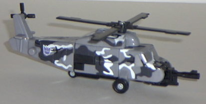
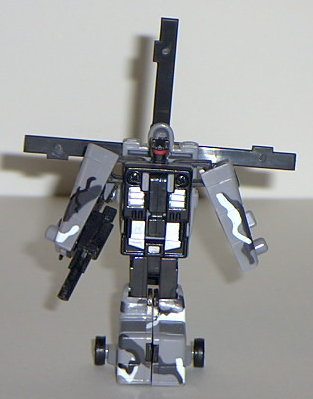
Size
: Basic
Difficulty of Transformation
: Easy
Individual Rating
: 6.5
(For a full review of the Ro-Tor mold, check out the original toy review here .)
The Urban Camo scheme
probably works the best with Ro-Tor out of all the Ruination parts. It
gives the chopper a much more "military" feel for it, and the robot mode
looks especially evil, due to the black-and-silver chest and hauntingly
red eyes. EEEEEvvviiiillll....
No mold changes have
been made to Ro-Tor.
 Movor
Movor
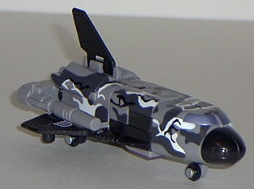
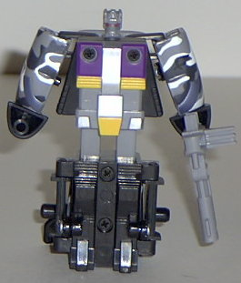
Size
: Basic
Difficulty of Transformation
: Very
Easy
Individual Rating
: 5.8
(For a full review of the Movor mold, check out the original toy review here .)
A space shuttle with
an Urban Camo color scheme? Well, regardless of the fact that this paint
scheme isn't really practical for this vehicle mode, it still looks awesome.
And the purple, silver, and yellow chest looks simply awesome in robot
mode.
Movor also has a slight
mold change- the shuttle nose is stubbier, probably done so for safety
reasons. Although it does make the shuttle mode look a bit more realistic
(After all, how many space shuttles have pointy noses?), it just means
that the robot mode has even stubbier and goofier-looking hands. So it's
a mixed bag.
 Rollbar
Rollbar
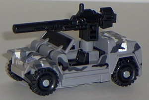
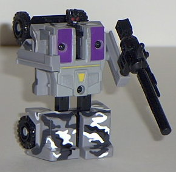
Size
: Basic
Difficulty of Transformation
: Very
Easy
Individual Rating
: 5.5
(For a full review of the Rollbar mold, check out the original toy review here .)
Again, the Urban Camo
color scheme is a bit of an improvement with Rollbar, even though the old
color scheme certainly wasn't bad. The white and black stripes on a gray
background just go so well together, and the purple and yellow are a nice
contrast on the robot mode. And, just like Mega-Octane, Rollbar has a nice
"dirt" fade on the front bumper of his vehicle mode.
No mold changes have
been made to Rollbar.
 Armorhide
Armorhide
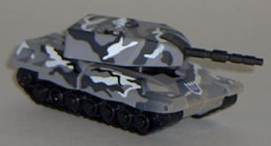
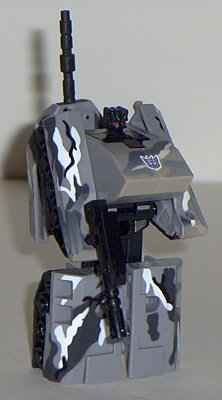
Size
: Basic
Difficulty of Transformation
: Very
Easy
Individual Rating
: 5.9
(For a full review of the Armorhide mold, check out the original toy review here .)
Armorhide is probably
the only toy in this set that I would have to say has a slightly worse
color scheme than the original. The white, black, and gray color scheme
is certainly nice, but I think that the light blue-and-black color scheme
of the original looked a bit nicer. Perhaps if this version of Armorhide
had some purple and yellow on him for contrast, I would have decided differently,
but overall, the old Armorhide wins out slightly.
No mold changes have
been made to Armorhide.
 Ruination
Ruination
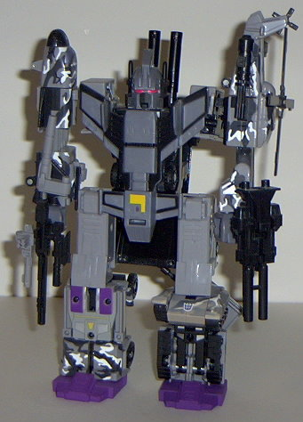
Size
: Gestalt (combination of four
Basics and a Deluxe)
Difficulty of Transformation
: Hard
Individual Rating
: 6.7
(For a full review of the Ruination combined mode, check out the original toy review here .)
Ruination's colors mesh much, much better on this version of the toy, considering that only Mega-Octane's and Rollbar's color schemes matched on the old one. The only problem I have color-wise with this gestalt- and it's a minor one- is that the Ruination "extra parts" are still the same color as they were on the old one, meaning that they're a noticeably different shade of gray than the rest of him. And instead of the feet being made of purple plastic, they're just painted purple all over. Very odd...
This version of Ruination is leaps and bounds over the old one color scheme wise on every one of his components except Armorhide, and even then, it's only a narrow loss. Top that off with the fact that it costs $5 less, and I'd recommend this one over the older version any day.
No Stats
Review by Beastbot
(NOTE: This version of Ruination comes with all the guns, parts, and whatnot that the older Ruination parts came with. Some are just not shown in the pictures both for simplicity's sake and to save web space.)